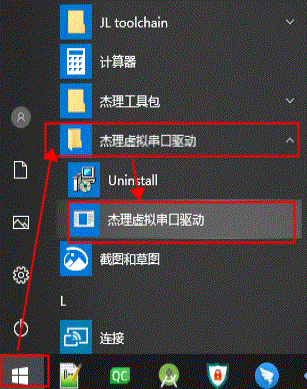
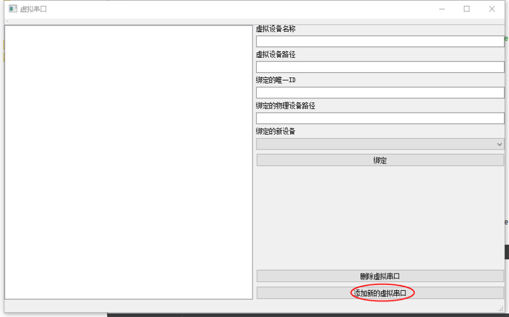
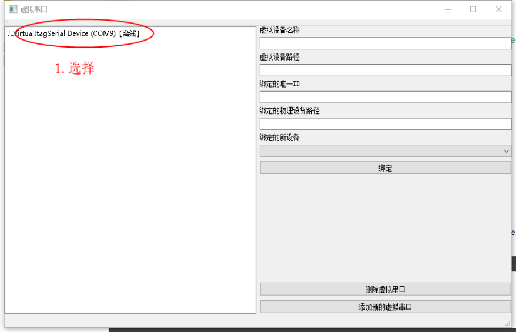
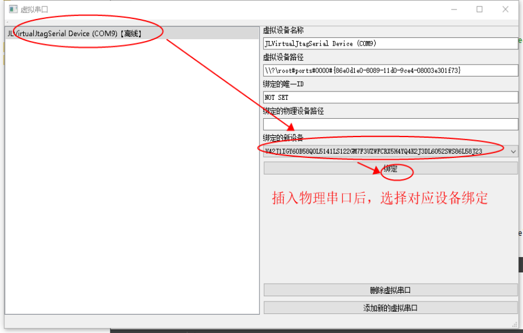
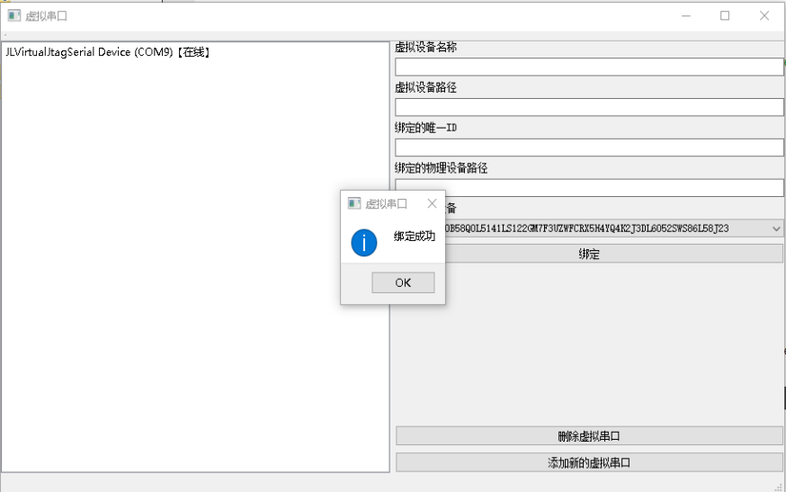
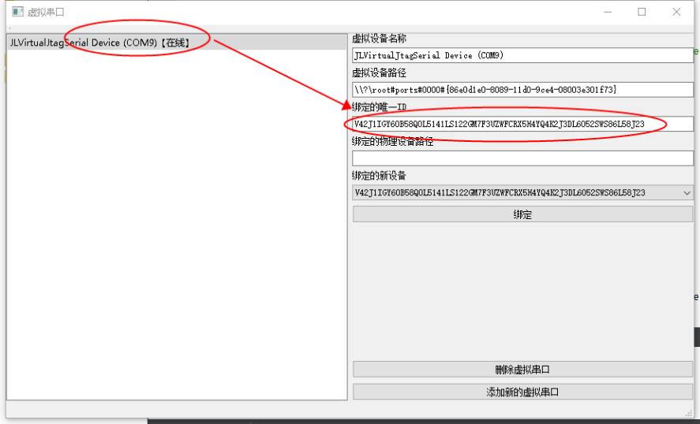

6.5. Virtual Serial Port
Some chips have to be downloaded over a serial port. In this case, you need to use the virtual serial port function.
Note
To enable this function, turn on DIP switch 7, power off, and then reconnect the Forced Upgrade Tool to the computer
6.5.1. Set up the virtual serial port
6.5.1.1. Download and install the virtual serial port driver
Download the Forced Upgrade Tool 4.0 serial port driver (click here to download). When the download is complete, double-click the file to run it and follow the steps to install it
Note
After installing the driver, restart the computer
6.5.1.2. Create a virtual serial port

Click "Add new virtual serial port" (添加新的虚拟串口)

6.5.1.3. Bind a physical device
Once it is created, a new virtual serial port appears on the left. Click it to show its information on the right. A newly created virtual serial port is not bound to any physical serial port, so its "Bound unique ID" (绑定的唯一ID) is "NOT SET". After a physical device is plugged in, the corresponding online physical device is shown in the "New device to bind" (绑定的新设备) drop-down list on the right.


6.5.1.4. Display the binding information
Select the ID of the physical device you want to bind, then click "Bind" (绑定). After the binding succeeds, select the virtual serial port again; the bound ID now shows the corresponding device ID.


6.5.2. Serial communication
Once the port is bound correctly and the corresponding Forced Upgrade Tool is connected, you can open the corresponding virtual serial port with a serial port tool.
Note
Some serial port tools may have compatibility problems with our virtual serial port tool. SSCOM has been tested and works.
6.5.3. Serial download
See Serial upgrade